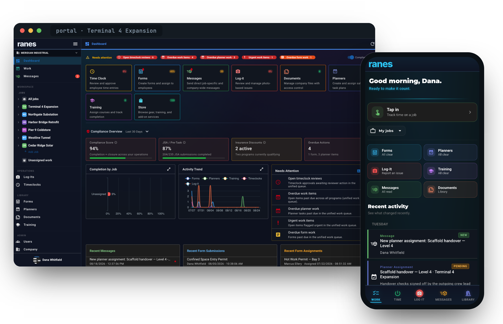
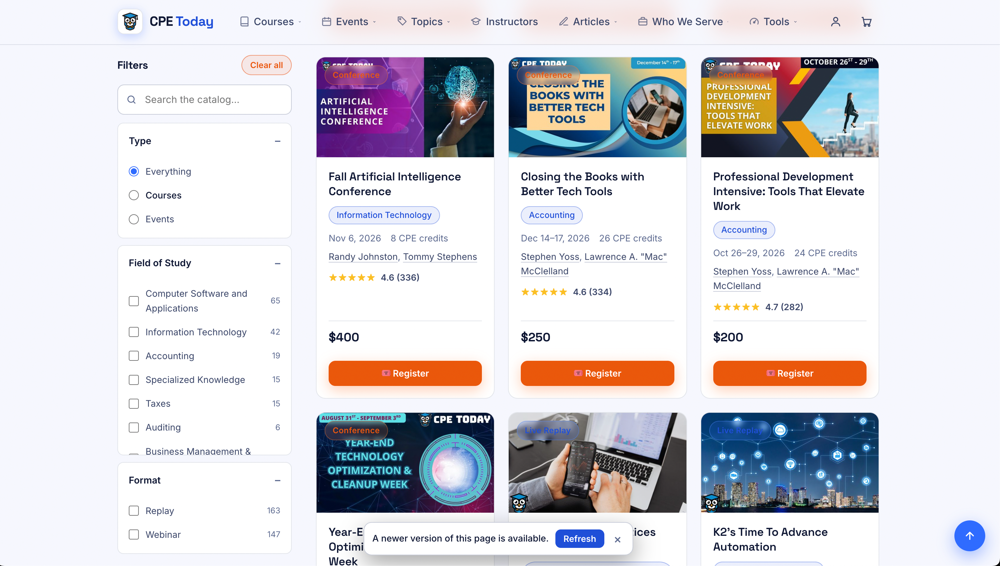

About
A technical artist devoted to the art of building software applications.
Senior-level understanding of the software ecosystem, used to guide and contain development through creative direction — from the first concept through elegant architecture.
Full-stack aptitude with an emphasis on single-page applications and native-shipped mobile apps built on JavaScript frameworks and RESTful APIs. Experience in building code concepts that explore potential solutions that can be explored and refined as part of the design process, and for building the architecture that keeps those solutions simple and elegant.
Appreciation for AI as a tool for exploring and creating software that extends beyond what we can build without it — with enough experience to scaffold and guide the direction: to build the guardrails, the documentation and the tracking, understanding the nuances of model strengths and setting limits that keep the architecture simple and elegant.
-
01
Concept & direction
Prototypes and concepts that simulate the live experience, built to start the argument early — so design and functionality get refined before they get expensive.
-
02
Applications
Single-page apps and native-shipped mobile: Vue 3, TypeScript, Quasar and Capacitor, with an eye on usability, accessibility and the browser realities underneath.
-
03
Services & data
.NET 8 APIs, EF Core, PostgreSQL and SQL Server. Contracts designed so the client stays simple and the truth stays on the server.
-
04
AI with guardrails
Using AI to move faster without losing the plot: scoped tasks, written specs, verification scripts and tracking docs that keep generated work inside a deliberate architecture.
Featured project
Ranes — supporting workers in risky environments.
A suite of enterprise tools for risk-conscious industries: a mobile field app, an administrative portal, and the services that tie a day's work to the evidence it produces.

The problem
Discount programs live or die on evidence. The people who generate that evidence are on a crane pad or in a confined space, wearing gloves, often without signal — and the people who need it are answering an auditor, an underwriter or a client three months later.
Most tools in this category solve that by asking the field worker to file things correctly: pick the job, pick the cost code, tag the photo. That discipline never survives contact with a real shift, and the reporting is only as good as the filing.
The approach
Context is attached once, by an administrator, and inherited server-side at write time. A field worker opens the app, sees the work that's due, and completes it. The job, cost code and tags arrive on the record because the assignment already carried them. Compliance evidence becomes a by-product of doing the work instead of a second, competing job.
What I built
- Field app (iOS & Android) One Vue 3 + Quasar codebase shipped natively through Capacitor: a work queue, a tap-in timeclock with a readiness check, custom and assigned forms integrated into workflows, photo capture with markup and comments, geo-location with maps.
- Work dashboard A planner-first home built around rich, concrete cards — visible work and collaborative tools that can be used to manage and track progress.
- Admin portal Job hierarchies, AI supported planning, a form builder, document control and an assignment model that makes the inheritance work.
- Reporting & exports Governed report definitions with job- and period-scoped exports, so "prove it" is a filter and a download rather than a project.
- Localization Nine locales across web and native, including date/format handling verified by automated checks.
- API & data work .NET 8 endpoints, EF Core projections and PostgreSQL schema changes where the client needed the server to carry more of the truth.
Assign
An administrator composes the work and attaches its context once — job, cost code, forms, documents.
Do
The crew sees one queue. No categorizing, no data entry beyond the work itself. It holds up offline.
Accrue
Submissions, photos, hours and hazards land already dimensioned by job, on the server, at write time.
Prove
Filter the period, scope to the site, export the packet. Same records, different question.
- 2native apps from a single codebase
- 9supported locales, web and native
- 60+automated contract checks gating merges
- .NET 8API on PostgreSQL, containerized end to end
Engineering notes: development runs entirely in Docker. Images are pushed to a private registry. Alongside unit and end-to-end tests, the codebase carries a set of contract verification scripts — executable assertions about design and behavior decisions that would otherwise quietly regress. It's also where the AI-assisted workflow earns its keep: specs, trackers and those checks are the guardrails that let generated work stay inside a deliberate architecture. Screens shown are representative; product detail available on request.
Selected work
Sample projects
A cross-section of earlier applications — learning platforms, event systems, e-commerce and mobile. Open any panel for the detail on what was built and how.
-

CPE Today
Continuing-education platform for financial professionals — course catalog, e-commerce and an e-learning system for accruing CPE credits.
Vue · SPA · ASP.NET · e-commerce -

Western CPE LMS
Learning portal for taking finance courses and earning CPE credits, including live webcast delivery with attendance checks.
Vue.js · .NET MVC/API · SASS · Webpack -

Attendance Tracker
Administrative tool for tracking attendance and issuing credit for live continuing-education events.
Vue.js · .NET MVC/API · SASS · Webpack -

Western CPE Website
Public marketing and commerce site with a course catalog integrated into an Umbraco CMS.
jQuery · Handlebars · .NET · SASS · Umbraco -

GetEvent Calendar
Endurance-sport event calendar and registration application with search, map views and custom event pages.
jQuery · Handlebars · PHP CodeIgniter · Google Maps -

SchoolBlocks Sponsors
Custom e-commerce and content management for school sponsorship, from Photoshop concepts through payment integration.
jQuery · PHP Yii · Stripe · Google APIs -

AOP Prior Art Rank
A tag-comparison reading tool for evaluating existing patent submissions, designed in concept and built out.
Photoshop · inVision · PHP Zend · JavaScript -

GetEvent Registration
Dashboard and control panel for event directors to manage participants, reporting and subscriptions.
PHP CodeIgniter · jQuery · Backbone -

TrainingPeaks Mobile
Mobile version of the training-log application, built as half of a two-person team against JSON/WCF services.
HTML5 · CSS3 · jQuery · .NET
Experience
Twenty-plus years of shipping software.
Roles ranging from technical lead to creative director — usually somewhere in between, translating business initiatives into technical approaches and then building them.
-
2023 — present
CTO / Designer / Engineer
Ranes · consulting
Enterprise risk and compliance platform: Vue 3 / TypeScript / Quasar front ends, Capacitor mobile apps for iOS and Android, and .NET 8 API and PostgreSQL work behind them. Front-end architecture, product direction and delivery.
-
2019 — 2023
Senior Software Engineer
Devmatics · Contract
A key member of a small team building custom software for clients — visual concepts, software architecture, feature roadmaps and design through to ASP.NET full-stack development and modern JavaScript client work, primarily Vue. Lead project: CPE Today, a continuing-education platform for financial professionals covering the course catalog, e-commerce and the e-learning system that issues CPE credit.
-
2016 — 2019
Senior Web Developer / Business Operations
WesternCPE.com
Defined technical initiatives and implemented operational systems. Co-built the marketing and commerce site (jQuery, SASS, ASP.NET MVC, Umbraco, Entity Framework) and led continuous development of the Vue.js learning portal, including webcast delivery with live Q&A and CPE attendance checks.
-
2015 — 2016
Senior Software Engineer
SchoolBlocks · Sopris Apps
Full-stack development on a website platform serving K–12 schools nationwide — PHP, SASS, Bootstrap, JavaScript, PostgreSQL, Node and Gulp.
-
2014 — 2015
Partner / Developer
GetEvent.com · PreRace
Full-stack build of a subscription event platform: e-commerce, director dashboards, robust event search and customizable event pages.
-
2012 — 2015
Consultant / Developer
Eldo Interactive
Interfaces for data-centric applications — interface design through HTML5 with PHP and .NET development against RESTful services.
-
2007 — 2012
Creative Director / Web Developer
TrainingPeaks.com · Peaksware
Direction of the main application through concepts and wireframes, then HTML5/CSS/JavaScript/C# development across the public site, e-commerce and the mobile application. Built the affiliate system for the managed e-commerce platform.
-
2000 — 2007
Web Developer · Owner
People Productions · Dogtail Design
Agency and independent work across Classic ASP, ASP.NET, PHP, Ruby on Rails, SQL Server and MySQL — a wide range of client projects, in teams and one-on-one.
B.S. Geophysics, University of Colorado at Boulder. Certified in Sitecore XP 8 Website Development for .NET Developers.
Status
Open to new opportunitiesLet's talk about what you're building.
Open to new opportunities. Happiest where design direction and engineering meet — and where someone has to own both.
- Emailmccarthychristian@gmail.com
- Phone720.206.8027
- Based inBoulder, Colorado
- ElsewhereLinkedIn →